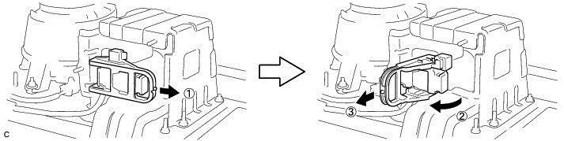
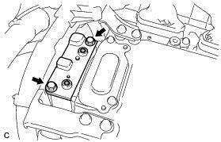
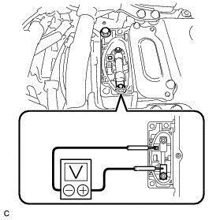
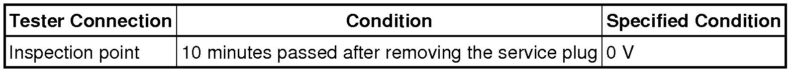
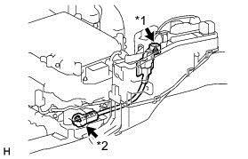
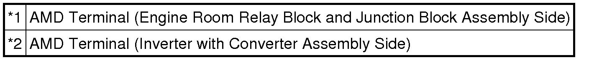
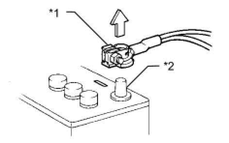
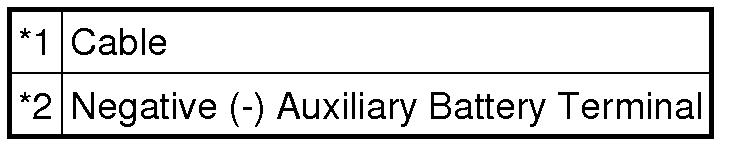
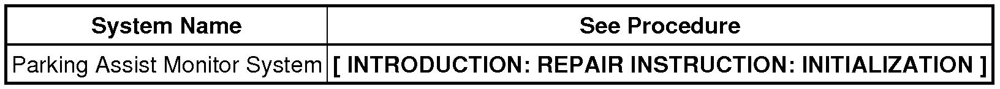

HYBRID / BATTERY CONTROL: HYBRID BATTERY SYSTEM: PRECAUTION; 2013 MY Camry HV [12/2012 -]
1. PRECAUTIONS FOR INSPECTING HYBRID CONTROL SYSTEM
(a) Before inspecting the high-voltage system or disconnecting the low voltage connector of the inverter with converter assembly, take safety precautions such as wearing insulated gloves and removing the service plug grip to prevent electrical shocks. After removing the service plug grip, put it in your pocket to prevent other technicians from accidentally reconnecting it while you are working on the high-voltage system.
NOTICE:
* After turning the power switch off, waiting time may be required before disconnecting the cable from the negative (-) auxiliary battery terminal. Therefore, make sure to read the disconnecting the cable from the negative (-) auxiliary battery terminal notices before proceeding with work .
* After removing the service plug grip, turning the power switch on (READY) may cause a malfunction. Do not turn the power switch on (READY) unless instructed by the repair manual.
(b) After disconnecting the service plug grip, wait for at least 10 minutes before touching any of the high-voltage connectors or terminals.

HINT
Waiting for at least 10 minutes is required to discharge the high-voltage capacitor inside the inverter with converter assembly.
(c) Check the voltage at the terminals in the inspection point in the inverter with converter assembly.
CAUTION:
Be sure to wear insulated gloves.
(1) Remove the 2 bolts and inverter cover .

NOTICE:
* Make sure to pull the connector cover assembly straight up, as a connector is connected to the bottom of the cover.
* Cover the opening with non-residue tape to prevent entry of foreign matter or liquid after removing the connector cover.
(2) Measure the voltage according to the value(s) in the table below.

Standard Voltage:

HINT
Set the tester to DC 750 V or more to measure the voltage.
(d) When turning the power switch on (IG) during inspections, do not press the power switch with the brake pedal depressed.
CAUTION:
Pressing the power switch with the brake pedal depressed causes the system to enter the READY-on state. This is very dangerous because high voltage may be applied to the inspection area.
(e) Turn the power switch off, wear insulated gloves, and disconnect the cable from the negative (-) terminal of the auxiliary battery before touching any of the orange-colored wires of the high-voltage system.
NOTICE:
After turning the power switch off, waiting time may be required before disconnecting the cable from the negative (-) auxiliary battery terminal. Therefore, make sure to read the disconnecting the cable from the negative (-) auxiliary battery terminal notices before proceeding with work .
(f) Turn the power switch off before performing any resistance checks.
(g) Turn the power switch off before disconnecting or reconnecting any connectors.
(h) When performing work involving high-voltage wires, use either a tool wrapping with vinyl insulation tape or a insulated tool.
(i) When high-voltage connectors are removed, wrap the connectors with insulation tape to prevent them from contacting foreign objects.
2. NOTICE FOR HYBRID CONTROL SYSTEM ACTIVATION
(a) When the warning light is illuminated, or the auxiliary battery has been disconnected and reconnected, attempting to turn the power switch on (READY) may not start the system (the system may not enter the READY-on state) on the first attempt. If so, turn the power switch off and reattempt to start the hybrid system.
NOTICE:
After turning the power switch off, waiting time may be required before disconnecting the cable from the negative (-) auxiliary battery terminal. Therefore, make sure to read the disconnecting the cable from the negative (-) auxiliary battery terminal notices before proceeding with work .
3. PRECAUTIONS FOR DISCONNECTING AMD TERMINAL
HINT
The AMD terminal is connected to the positive terminal of the auxiliary battery. To prevent damage when the AMD terminal is being disconnected, use the following procedure.
(a) Be sure to disconnect the cable from the negative (-) terminal of the auxiliary battery before disconnecting the AMD terminal from the engine room junction block assembly.

Text in Illustration

NOTICE:
After turning the power switch off, waiting time may be required before disconnecting the cable from the negative (-) auxiliary battery terminal. Therefore, make sure to read the disconnecting the cable from the negative (-) auxiliary battery terminal notices before proceeding with work .
(b) After disconnecting the AMD terminal, wrap the terminal with insulation tape.
(c) Be sure to reconnect the AMD terminal to the engine room junction block assembly before reconnecting the cable of the negative (-) terminal of the auxiliary battery.
NOTICE:
A short circuit to ground may occur if the AMD terminal is disconnected before the cable is disconnected from the negative (-) terminal of the auxiliary battery. If a short circuit to ground occurs, it can result in an open circuit in a fusible link or fuse.
4. DISPOSING OF AN HV BATTERY
(a) When disposing of an HV battery, make sure to return it through an authorized collection agent who is capable of handling it safely. If the HV battery is returned via the manufacturer specified route, it will be returned properly and in a safe manner by an authorized collection agent.
CAUTION:
* Accidents such as electric shock may result if the HV battery is disposed of improperly or abandoned. Therefore, make sure to return all HV batteries through an authorized collection agent.
* After removing the HV battery, keep it away from water. Exposure to water may cause the HV battery to produce heat, resulting in a fire.
5. DISCONNECTING AND RECONNECTING NEGATIVE AUXILIARY BATTERY CABLE
(a) Before performing work on electronic components, disconnect the cable from the negative (-) auxiliary battery terminal to prevent damage to the electrical system or electrical components.

Text in Illustration

(b) Before disconnecting and reconnecting the auxiliary battery cable, turn the power switch off and the headlight switch off. Then loosen the terminal nut completely. Do not damage the cable or terminal.
(c) When the auxiliary battery cable is disconnected, the clock and radio settings and stored DTCs are cleared. Therefore, before disconnecting the auxiliary battery cable, make a note of them.
NOTICE:
* After turning the power switch off, waiting time may be required before disconnecting the cable from the negative (-) auxiliary battery terminal. Therefore, make sure to read the disconnecting the cable from the negative (-) auxiliary battery terminal notices before proceeding with work .
* When the cable is disconnected from the negative (-) auxiliary battery terminal, initialize the following system(s) after the cable is reconnected.
